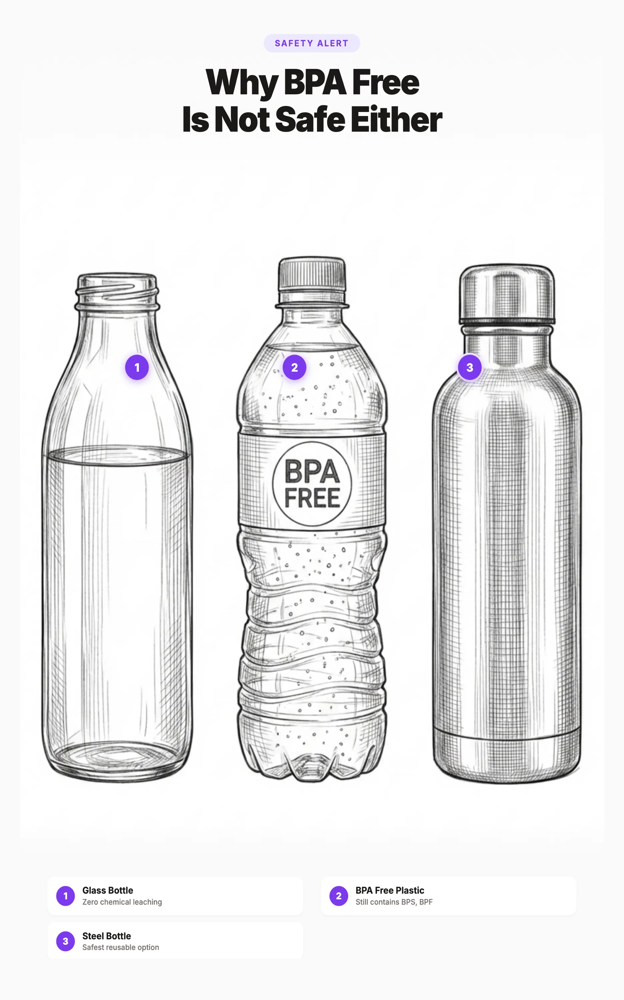

BPA Free Is Not Safe: What Replaces BPA and Why It Matters

The 30 Second Summary
- "BPA Free" is a regrettable substitution, not a safety upgrade. BPS and BPF replacements show similar endocrine disrupting effects in lab studies.
- The safe daily intake of BPA was lowered 20,000 times in 2023. The European Food Safety Authority slashed the tolerable intake after new evidence on immune system effects, which the FDA still ignores.
- Phthalates are the other half of the problem. They live in vinyl, fragrance, and food packaging, and are linked to lower testosterone, fertility issues, and developmental harm.
- Recycling code 2, 4, and 5 are the safest plastics. Avoid 3 (PVC), 6 (polystyrene), and 7 (mixed, often polycarbonate with bisphenols).
- Default to glass and stainless steel. Urban Green glass containers for storage and a Klean Kanteen for water cover most daily exposure.
- Never microwave or dishwasher plastic, even "safe" plastic. Heat is when bisphenols and phthalates leach the most, regardless of what the label claims.
You see the "BPA Free" label on a water bottle, and you feel safer. You put it in your cart thinking you made the healthy choice. But here is what the label does not tell you: the chemical that replaced BPA in that bottle is often just as harmful. Studies show that BPA substitutes like BPS and BPF have the same endocrine disrupting effects as the chemical they replaced. This is what scientists call a regrettable substitution, swapping one harmful chemical for another that has not been studied enough to be regulated yet.
This guide explains exactly what BPA and phthalates are, how they affect your body, why "BPA free" does not mean safe, and what you can actually do to protect yourself and your family.
1. The BPA Free Label Is Misleading You
"BPA Free" is a voluntary marketing claim. It means no bisphenol A was intentionally added to the product. That is all it means. It does not mean the product is free of all bisphenols, free of phthalates, or free of other hormone disrupting chemicals. And it does not require any third party testing to verify.
When manufacturers removed BPA from their products due to consumer pressure, most simply replaced it with a structural cousin. The most common replacements are BPS (bisphenol S) and BPF (bisphenol F). A 2024 comparative study tested eleven BPA alternatives and found that most exhibited estrogenic and anti androgenic activity similar to BPA. A 2025 cross country analysis found that while EU regulations cut BPA exposure by 33%, BPS exposure increased by 47% and BPF exposure increased by 22%. By 2024, BPS and BPF accounted for over 76% of bisphenol related metabolic disease worldwide.
A 2023 analysis found the total global burden of bisphenol attributable metabolic disease rose from 68 million cases in 2000 to 127 million cases in 2024, including 72 million obesity cases, 24 million type 2 diabetes cases, and 31 million metabolic syndrome cases. BPA was not the only driver. Its replacements contributed significantly.
2. What Is BPA and How Does It Affect Your Body
Bisphenol A (BPA) is a synthetic chemical used since the 1960s to make polycarbonate plastics (the hard, clear type) and epoxy resins (the coatings inside metal food cans). Over 6 million tons are produced globally each year, making it one of the highest volume chemicals in the world.
Where BPA is found
- Metal can linings: The epoxy coating inside most canned foods and beverages. This is one of the largest sources of dietary BPA exposure.
- Polycarbonate plastics: Hard, clear plastic containers, reusable water bottles, and food storage. Usually marked with recycling code #7 and the letters "PC."
- Thermal receipt paper: Store receipts, ATM slips, parking tickets. A single receipt contains roughly 60 to 100 milligrams of free BPA, about a million times more than what leaches from a plastic bottle.
- Water supply pipes: Some older PVC and epoxy lined pipes.
- Recycled paper products: BPA from thermal paper enters the recycling stream and contaminates recycled cardboard and paper.
How BPA enters your body
- Through food and drinks: BPA leaches from can linings and plastic containers into food, especially when heated. Microwaving in plastic, pouring hot liquids into polycarbonate, or leaving plastic water bottles in a hot car all increase leaching dramatically.
- Through your skin: Handling thermal receipts transfers BPA directly through your skin. A 2014 study found that wet or greasy fingers absorb up to 10 times more BPA from receipts. Using hand sanitizer before touching a receipt increases absorption even further because the alcohol opens skin pores.
- Through dust: BPA in household dust can be inhaled or ingested, especially by children through hand to mouth contact.
What BPA does to your body
BPA is a xenoestrogen, meaning it mimics the structure of estrogen and binds to estrogen receptors in your body. Even at extremely low doses (nanogram levels), it interferes with hormone signaling.
3. What Are Phthalates and Why Should You Care
Phthalates (pronounced "THAL ates") are a group of chemicals used primarily to make PVC plastic soft and flexible. They can make up to 40% of a PVC product by weight. Unlike BPA, which is chemically bound to the plastic it forms, phthalates are not bound to the plastic they soften. This means they continuously leach, migrate, and evaporate from products throughout their lifetime.
Where phthalates are found
- Vinyl/PVC products: Flooring, shower curtains, garden hoses, raincoats, inflatable toys, car interiors, wire coatings
- Food packaging: Plastic wrap, containers, can linings, food processing conveyor belts, food handling gloves
- Personal care products: Hidden under the word "fragrance" on ingredient labels. Found in perfumes, lotions, shampoos, hair sprays, nail polishes, and deodorants
- Children's toys: Soft plastic toys and teething rings (now regulated in many jurisdictions)
- Medical devices: IV bags, blood bags, tubing, catheters. DEHP can leach directly into the bloodstream during medical procedures
- Building materials: Vinyl flooring, wall coverings, adhesives, paint
The most common types
| Phthalate | Common Name | Where Found | Safety Status |
|---|---|---|---|
| DEHP | Di(2 ethylhexyl) phthalate | PVC, medical devices, food packaging | |
| DBP | Dibutyl phthalate | Nail polish, adhesives, printing inks | |
| DEP | Diethyl phthalate | Personal care, fragrance solvent | |
| BBP | Butyl benzyl phthalate | Vinyl flooring, food conveyor belts | |
| DINP | Diisononyl phthalate | Toys, flooring (DEHP replacement) |
What phthalates do to your body
While BPA mimics estrogen, phthalates do the opposite: they block testosterone. They are anti androgenic, meaning they reduce the action of male hormones. This is especially harmful during fetal development, when testosterone is critical for normal male reproductive development.
4. BPA vs Phthalates: How They Differ
Both are endocrine disruptors found in plastics, but they work in different ways, are found in different products, and affect the body through different mechanisms.
5. What Replaced BPA (and Why It Is Just as Bad)
When public pressure forced manufacturers to remove BPA, most did not switch to a fundamentally different chemistry. They switched to the nearest structural analog, a molecule almost identical to BPA with a few atoms rearranged. This is the core of the problem.
Other bisphenol replacements include BPAF (shows stronger estrogenic activity than BPA in some tests), BPB, BPE, and BPZ. A 2024 comparative study tested these alternatives in a battery of in vitro tests and concluded that most mainstream BPA alternatives exhibit the same endocrine disrupting profile as BPA itself.
6. Where BPA, BPS, and Phthalates Hide in Your Home
These chemicals are not just in obvious plastic containers. They are in places most people never think to check.
Kitchen
- Canned foods: Most metal cans still use epoxy linings containing BPA, BPS, or BPF. This is the single largest source of dietary bisphenol exposure.
- Plastic wrap: PVC based wrap (like traditional Saran Wrap) can contain phthalates, especially when used to cover hot food.
- Takeout containers: Styrofoam and plastic containers can leach chemicals into hot food. Studies show dining out increases phthalate levels by 35%.
- Plastic cutting boards: Can shed microplastics that may contain phthalates.
- Non stick coatings: Some older non stick coatings use BPA in their adhesive layers.
Bathroom
- Shower curtain: Vinyl/PVC shower curtains are one of the highest phthalate sources in the home. That "new shower curtain smell" is phthalates off gassing.
- Personal care products: Any product listing "fragrance" or "parfum" likely contains phthalates (specifically DEP) as a fragrance solvent. This includes shampoo, lotion, deodorant, perfume, and hair spray.
- Nail polish: Often contains DBP as a plasticizer.
- Vinyl flooring: Bathroom vinyl tile or sheet flooring can contain up to 40% phthalates by weight.
Living Areas
- Vinyl flooring throughout the home: One of the largest ongoing phthalate exposure sources. Phthalates evaporate from the flooring and collect in household dust.
- Electronics: Cables, power cords, and some device housings contain PVC with phthalates.
- Receipts and mail: Thermal receipt paper and some recycled paper products contain BPA or BPS.
- Furniture: Vinyl upholstery, PVC trim, and some foam cushions with vinyl covers.
Children's Items
- Soft plastic toys: Older or unregulated toys can contain phthalates. Eight phthalates are now banned in US children's toys above 0.1%.
- Bath toys: Rubber duckies and soft bath toys may contain phthalates.
- Plastic bottles and sippy cups: Even "BPA free" versions may contain BPS or BPF.
- Play mats: PVC foam play mats can contain phthalates. Choose EVA foam or fabric alternatives.
7. Plastic Recycling Codes: Which Numbers Are Safest
The number inside the recycling triangle on plastic products is not a safety rating, but it does tell you what type of plastic the product is made from. Some types are much more likely to contain BPA or phthalates than others.
8. Labels You Can Trust (and Labels to Ignore)
Labels to ignore or treat with skepticism
| Label | What You Think It Means | What It Actually Means |
|---|---|---|
| BPA Free | Safe from hormone disrupting chemicals | |
| Non Toxic | Free of harmful chemicals | |
| Natural | Made from safe, natural ingredients | |
| Eco Friendly | Safe for the environment and you |
Labels and certifications that carry real weight
| Certification | What It Tests For | Trustworthiness |
|---|---|---|
| MADE SAFE | Screens for BPA, BPS, phthalates, and other endocrine disruptors | |
| EWG Verified | Screens personal care products for phthalates, fragrance chemicals, and other toxicants | |
| NSF International | Independent testing for food contact materials | |
| OEKO TEX | Certifies textiles free of harmful substances | |
| Cradle to Cradle | Evaluates material health and chemical safety |
9. Safe Product Swaps
The most effective way to reduce BPA and phthalate exposure is to replace plastic food contact and personal care products with safer alternatives. Here are the highest impact swaps.
Urban Green Glass Containers with Glass Lids
Replace all plastic food storage with glass containers that have glass lids, not plastic ones. Urban Green makes borosilicate glass containers with silicone framed glass lids that are 100% plastic free. No BPA, no BPS, no phthalates touching your food at any point. Microwave safe with the lid on, oven safe, freezer safe, and dishwasher safe.
Replaces: Plastic Tupperware, BPA free containers, glass containers with plastic lids
Price: $30 to $40 for a 3 pack
Stainless Steel Water Bottle (Klean Kanteen)
Food grade 18/8 stainless steel does not leach chemicals at any temperature. Klean Kanteen uses no plastic or BPA linings. The stainless steel loop cap is also plastic free. Backed by their Strong as Steel lifetime guarantee.
Replaces: Plastic water bottles, BPA free bottles
Price: $20 to $35
Bee's Wrap Beeswax Wraps (Replace Plastic Wrap)
PVC based plastic wrap can contain phthalates. Bee's Wrap is made from organic cotton, beeswax, jojoba oil, and tree resin. They cling to bowls and food using the warmth of your hands. Compostable at end of life, each wrap lasts up to a year. Made in the USA.
Replaces: PVC plastic wrap, cling film
Price: $15 to $20 for a 3 pack
Stainless Steel Baby Bottles (Pura Kiki)
Even "BPA free" plastic baby bottles can contain BPS or BPF. Pura Kiki makes 100% plastic free stainless steel bottles with medical grade silicone nipples. MADE SAFE certified. The same bottle grows with your child by swapping the silicone top from nipple to sippy spout to straw to sport cap.
Replaces: Plastic baby bottles, BPA free baby bottles
Price: $20 to $30 per bottle
PEVA or Fabric Shower Curtain
A PVC shower curtain is one of the highest phthalate sources in your home. Switch to a PEVA (non PVC) liner or a fabric curtain with a water resistant coating. The "new shower curtain smell" is literally phthalates off gassing into your bathroom air.
Replaces: Vinyl/PVC shower curtain
Price: $15 to $30
Fragrance Free Personal Care
The word "fragrance" on a label is a legal loophole that allows companies to hide dozens of chemicals, including phthalates, without listing them. Choose products labeled "fragrance free" (not "unscented," which can still contain masking fragrance chemicals) or use products with transparent ingredient lists and essential oils only.
Replaces: Fragranced shampoo, lotion, deodorant, perfume
For a complete room by room guide to eliminating BPA and phthalates from your home, see our How to Avoid BPA and Phthalates in Everyday Products article.
10. Where Regulations Stand in 2026
The EU banned BPA in all food contact materials effective January 2025 (Regulation EU 2024/3190). Critically, the ban also covers BPA analogs including BPS, BPAF, and TBBPA. DEHP, DBP, DiBP, and BBP are restricted under REACH, and multiple phthalates are banned in children's toys. The EU acted after EFSA lowered the safe daily intake of BPA by 20,000 times in 2023.
The FDA has only banned BPA in baby bottles, sippy cups, and infant formula packaging. It still maintains BPA is safe at current levels in other food contact materials. The Environmental Defense Fund petitioned the FDA in 2022 to revoke all BPA authorizations in food contact. The FDA agreed to reconsider but has not yet acted. As of January 2026, the EDF publicly noted the contrast: the EU marked the first anniversary of its BPA ban while the FDA still allows BPA in Americans' food.
At least 13 states have enacted their own BPA restrictions in children's products. California added BPS to its Proposition 65 list as a reproductive toxicant in December 2024, triggering hundreds of violation notices against businesses using BPS containing receipt paper. The EPA announced intent to regulate dozens of uses of five phthalate chemicals, with a ban on certain uses taking effect January 2025.
11. Frequently Asked Questions
Not necessarily. BPA free only means the product does not contain bisphenol A specifically. Most BPA free products use replacement chemicals like BPS or BPF that have been shown in studies to have the same endocrine disrupting effects as BPA. A 2024 comparative study found that most mainstream BPA alternatives exhibit similar estrogenic and anti androgenic activity. The safest option is to avoid plastic food contact materials entirely and use glass, stainless steel, or food grade silicone instead.
BPA (bisphenol A) is a synthetic chemical used to make polycarbonate plastics and epoxy resin can linings. It is an endocrine disruptor that mimics estrogen in the body. The CDC has detected BPA in the urine of 93% of Americans. Health effects linked to BPA include reproductive problems, obesity, diabetes, heart disease, and hormone related cancers. In 2023, the European Food Safety Authority lowered the safe daily intake of BPA by 20,000 times, concluding that current exposure levels are unsafe for all age groups.
Phthalates are chemicals used to make PVC plastic soft and flexible. They are found in vinyl flooring, shower curtains, food packaging, personal care products (hidden under the word "fragrance" on labels), children's toys, and medical devices. Unlike BPA which mimics estrogen, phthalates block male hormones (androgens). They are linked to reproductive harm, ADHD and lower IQ in children, asthma, and obesity. Phthalate metabolites are detected in over 95% of Americans tested.
BPA and phthalates are both endocrine disruptors found in plastics, but they work differently. BPA mimics estrogen (it is estrogenic), while phthalates block testosterone (they are anti androgenic). BPA is used to make hard polycarbonate plastics and can linings. Phthalates are used to make PVC soft and flexible. Both enter your body through food, skin contact, and dust inhalation. Both are linked to reproductive harm, metabolic disease, and developmental issues in children.
BPA free is a voluntary marketing label that means no bisphenol A was intentionally added to the product. It does not mean the product is free of all bisphenols. Many BPA free products contain BPS, BPF, or other bisphenol analogs that have similar health effects. It also does not mean the product is free of phthalates or other harmful chemicals. The label is unregulated and does not require third party testing.
The most effective approach is to reduce plastic food contact as much as possible. Use glass or stainless steel containers for food storage, never heat food in plastic, choose fresh or frozen foods over canned, avoid products with "fragrance" (which often contains phthalates), decline paper receipts or wash hands after handling them, and look for third party certifications like MADE SAFE rather than relying on BPA free labels.
Plastics numbered 2 (HDPE), 4 (LDPE), and 5 (PP/polypropylene) are generally considered the safest. Avoid number 3 (PVC, likely contains phthalates), number 6 (polystyrene, can leach styrene), and number 7 if marked PC (polycarbonate, contains BPA). However, no plastic is guaranteed free of all chemical leaching, especially when heated. Glass and stainless steel remain the safest food contact materials.
The EU banned BPA in all food contact materials effective January 2025, including several BPA analogs like BPS. The FDA has only banned BPA in baby bottles, sippy cups, and infant formula packaging, and still maintains BPA is safe at current levels in other food contact materials. At least 13 US states have enacted their own BPA restrictions in children's products. California added BPS to its Proposition 65 list as a reproductive toxicant in December 2024.
12. Sources
Related Articles
- Toxic Kitchen Appliances, Ranked by Leaching Risk
Kitchen appliances with plastic food contact surfaces leach BPA, BPS, and PFAS. See which ones are worst. - How to Avoid BPA and Phthalates in Everyday Products: A Room by Room Guide (2026)
The complete room by room guide to eliminating BPA and phthalates from your kitchen, bathroom, bedroom, and living room. - Best Plastic Free Food Storage Containers (2026)
Glass and stainless steel alternatives that eliminate BPA and phthalate exposure from food storage. - Microplastics in Baby Food: How to Protect Your Child (2026)
Babies are especially vulnerable to endocrine disruptors. Learn how to reduce plastic exposure in baby food and feeding. - How to Start Reducing Plastic Exposure: A Practical Priority Guide (2026)
Not sure where to start? This guide prioritizes the changes that will reduce your total exposure the most.